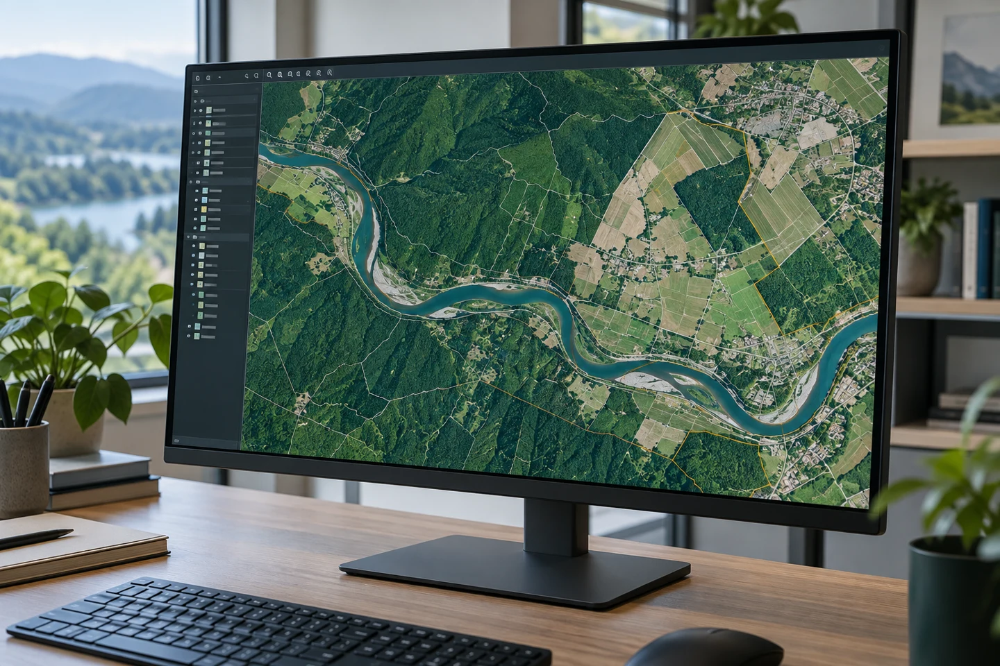
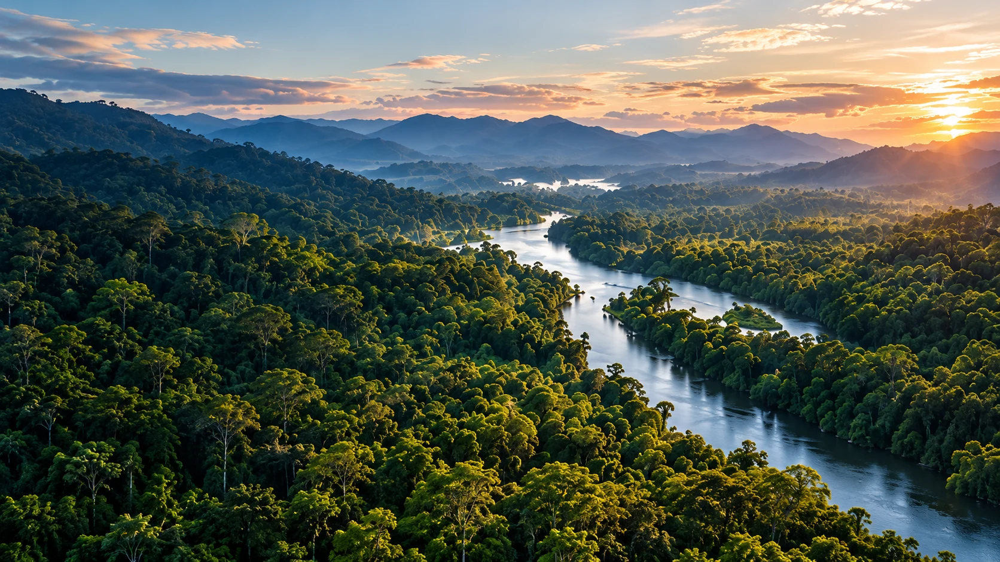

Describe tu proyecto
Indica el objetivo de la linderación y registra tus datos de contacto.
Clavijo y Asociados · Soluciones tecnológicas
Inteligencia ambiental y territorial.
Transformamos conocimiento técnico en soluciones digitales que facilitan la gestión de información geográfica y los procesos especializados.

Tecnología desarrollada por la consultora
Clavijo 360 reúne nuestros desarrollos digitales. Su primera solución es GeoTech Linderos, enfocada en recibir información geográfica y facilitar la gestión de servicios de linderación con revisión técnica profesional.
Primera solución disponible
Un canal especializado para solicitar servicios de linderación y remitir los archivos geográficos del proyecto. Cada solicitud se identifica mediante un código y pasa a revisión para definir el alcance del trabajo.

Proceso de atención
Indica el objetivo de la linderación y registra tus datos de contacto.
Envía los archivos solicitados desde el portal seguro de GeoTech.
Revisamos la documentación y coordinamos el alcance, la cotización y los siguientes pasos.
Acompañamiento técnico
Evaluamos las necesidades, los antecedentes y el alcance para definir una propuesta técnica acorde con tu caso.
Contáctanos